3C
| Transfer Output Retainer Assembly Disassembly and Reassembly |
NOTICE:
Some parts are intended to be replaced as a set. If you replace these parts individually, rather than as a set, performance may be adversely affected.
Always replace the following parts as a set or in an assembly.
•Bevel gear and pinion
•Inner and outer races of a taper roller bearing
•Inner and outer races of a taper roller bearing
Disassembly
1)Remove transfer output retainer bolts (1) and transfer output retainer assembly (2) and shim (3).

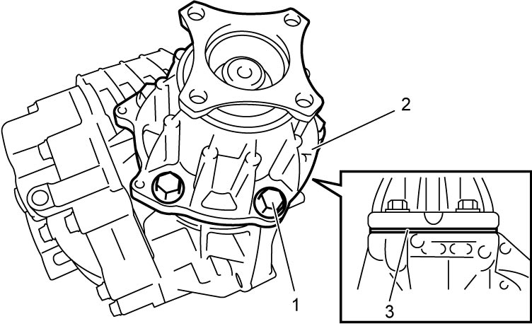
 "Expand image")
2)Remove O-ring from transfer output retainer.
3)Install special tool to flange using removed propeller shaft bolts (1), and then loosen transfer output flange nut while locking flange with special tool.
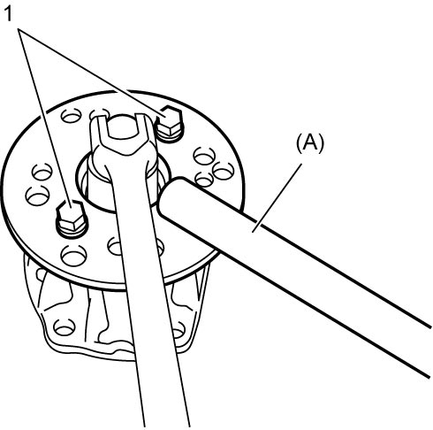
 "Expand image")
 "Expand image")
5)Remove bevel pinion from transfer output retainer by tapping it with plastic hammer.
6)Remove spacer (1) from bevel pinion (2).
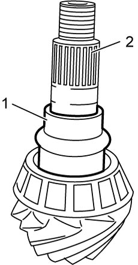
 "Expand image")
7)Remove front taper roller bearing (3) from bevel pinion (4) using bearing puller (1) and hydraulic press (2).
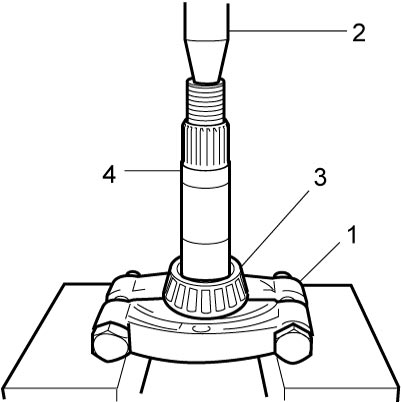
 "Expand image")
8)Remove oil seal from transfer output retainer.
9)Remove rear taper roller bearing (1) from transfer output retainer (2).
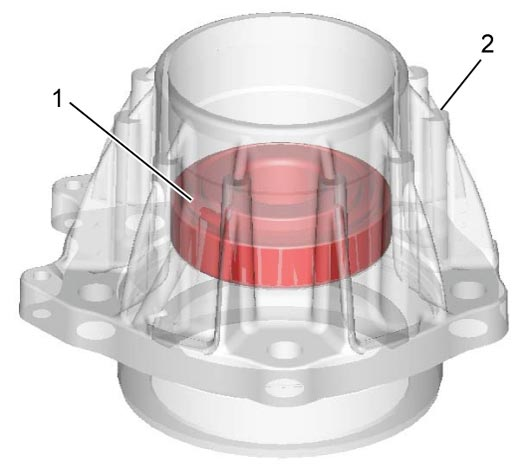
 "Expand image")
10)Remove outer races (front (2) and rear (3)) using brass bar (1).
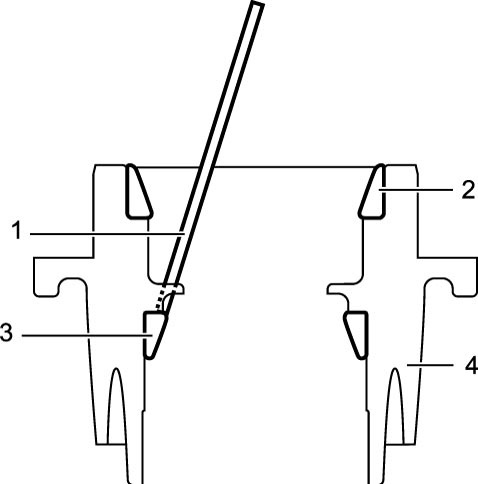
 "Expand image")
| 4. | Transfer output retainer |
Reassembly
1)Press-fit outer races (front and rear) using special tools and hydraulic press.
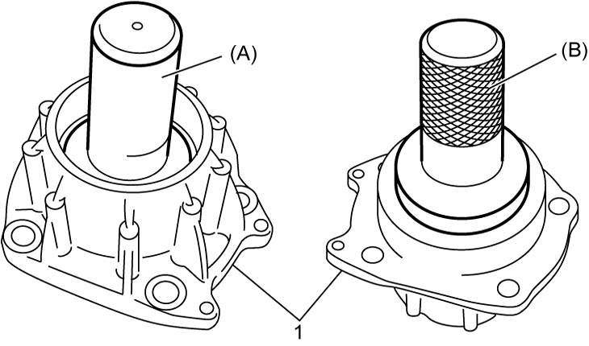
 "Expand image")
| 1. | Transfer output retainer |
2)Select transfer output retainer shim using the following procedure:
a)Apply gear oil “A” to taper roller bearing (front (1) and rear (2)).
b)Install taper roller bearing (front and rear) and special tools (pinion dummy) to transfer output retainer (3).
NOTE:
Special tools (A) – (D) are included in differential adjuster set (09922-76110).
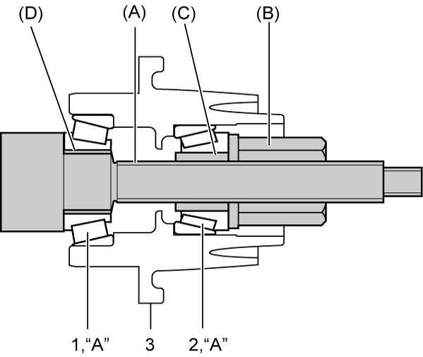
 "Expand image")
c)Tighten bevel pinion nut (special tool) so that specified bearing preload is obtained.
NOTE:
Before preload measurement with torque wrench, rotate special tool more than 15 revolutions by hand.
Rotational torque of bevel pinion (Bearing preload)
0.5 – 1.3 N·m (0.05 – 0.13 kgf-m, 0 – 1.0 lbf-ft) (rotational speed about 50 rpm)
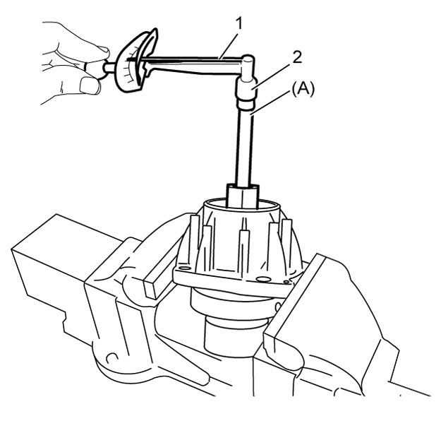
 "Expand image")
| 1. | Torque wrench | 2. | 10 mm (0.4 in.) socket |
d)Calculate thickness of shim “f” with calculating formula.
“f” = “c” + “d” – “e”
“f” = “c” + “d” – “e”
•“c” = “a” – “b”
•“e”: distance between transfer output retainer installation surface (3) and bevel gear center line (4) (100.95 mm (3.9744 in.))
—“a”: height from transfer output retainer installation surface (1) to pinion dummy top (mm (in.))
—“b”: pinion dummy height (40 mm (1.5748 in.))
•“d”: mounting distance of bevel pinion (2) (70.00 mm (2.7559 in.))—“b”: pinion dummy height (40 mm (1.5748 in.))
•“e”: distance between transfer output retainer installation surface (3) and bevel gear center line (4) (100.95 mm (3.9744 in.))
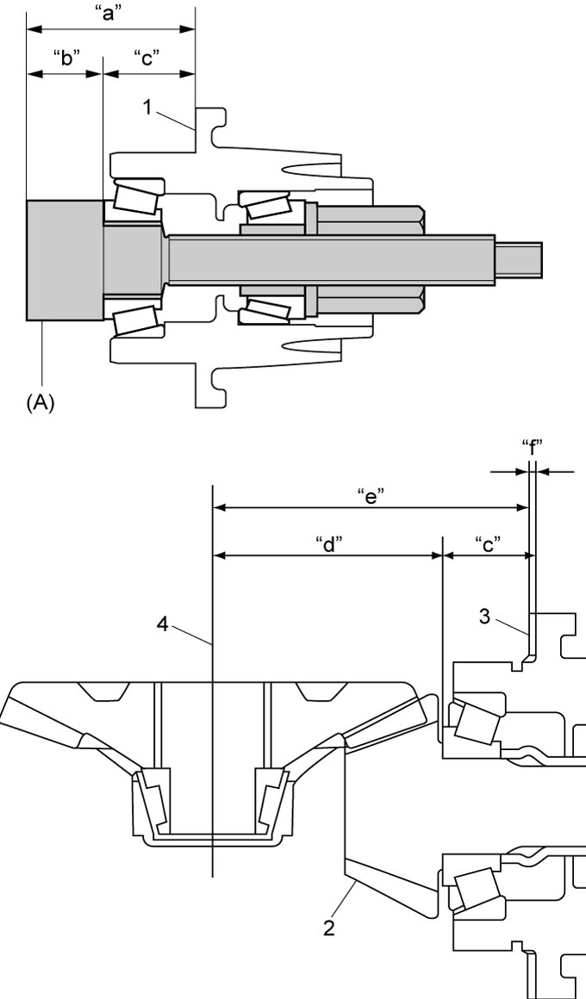
 "Expand image")
e)Select a shim closest to the calculated value (necessary shim thickness) from the available shims or combine shims to become closest to calculated value.
Available transfer output retainer shim thickness
| Select shim | |
|---|---|
| 0.30 mm (0.012 in.) | 2.00 mm (0.079 in.) |
| 1.85 mm (0.073 in.) | 2.03 mm (0.080 in.) |
| 1.88 mm (0.074 in.) | 2.06 mm (0.081 in.) |
| 1.91 mm (0.075 in.) | 2.09 mm (0.082 in.) |
| 1.94 mm (0.076 in.) | 2.12 mm (0.083 in.) |
| 1.97 mm (0.078 in.) | 2.15 mm (0.085 in.) |
3)Press-fit front taper roller bearing (2) to bevel pinion (3) using special tool and hydraulic press (1).
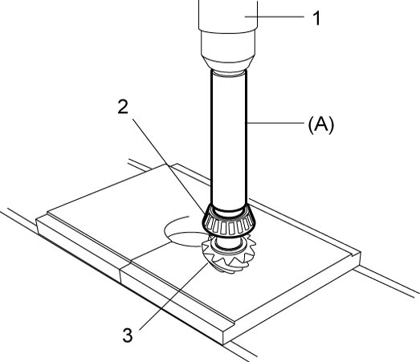
 "Expand image")
4)Apply gear oil “A” to front taper roller bearing (1).
5)Install bevel pinion (3) with new spacer (2) to transfer output retainer (4).
6)Apply gear oil “A” to rear taper roller bearing (5).
7)Install rear taper roller bearing to bevel pinion using special tool tapping lightly with plastic hammer.
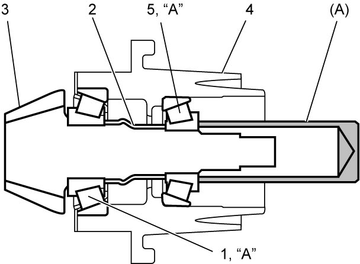
 "Expand image")
9)Install oil seal in transfer output retainer (2) using special tool and hammer.
Transfer output flange oil seal installing position
“g”: 23.0 – 24.0 mm (0.91 – 0.94 in.)
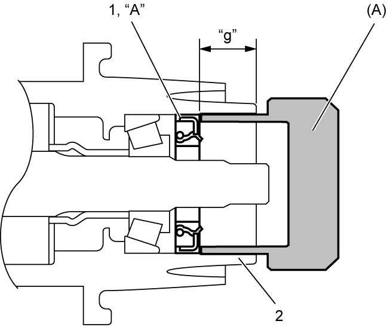
 "Expand image")
10)Install transfer output flange by tapping with plastic hammer and tighten new transfer output flange nut gradually so as rotational torque of bevel pinion to be in specified value.
NOTICE:
The transfer output flange nut is self-locking nut. If an overtightened nut is loosened to specified torque and is used as it is, the nut may loosen.
Tighten the transfer output flange nut slowly and carefully while measuring the pinion preload, until the specified pinion preload is obtained. Never loosen the nut.
If the nut is overtightened, replace the spacer and nut and then tighten the nut.
NOTE:
Before preload measurement with torque wrench (3), rotate bevel pinion more than 15 revolutions by hand.
Bevel pinion bearing preload
0.5 – 1.3 N·m (0.05 – 0.13 kgf-m, 0 – 1.0 lbf-ft) (rotational speed about 50 rpm)
Tightening torque
Transfer output flange nut: 100 – 300 N·m (10.2 – 30.6 kgf-m, 74.0 – 221.5 lbf-ft)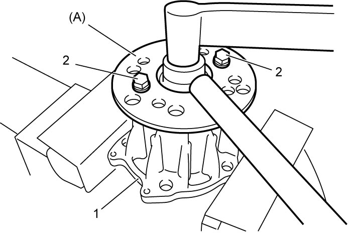
 "Expand image")
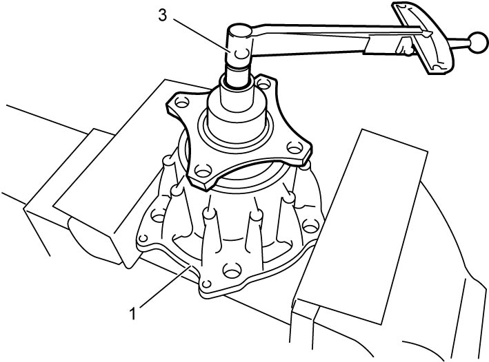
 "Expand image")
| 1. | Transfer output retainer | 2. | Removed propeller shaft bolt |
 "Expand image")